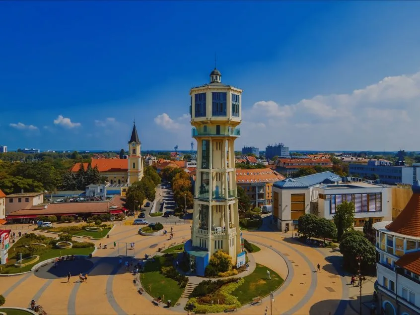
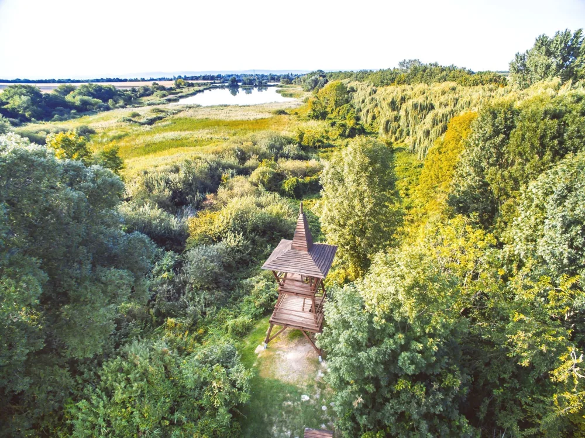
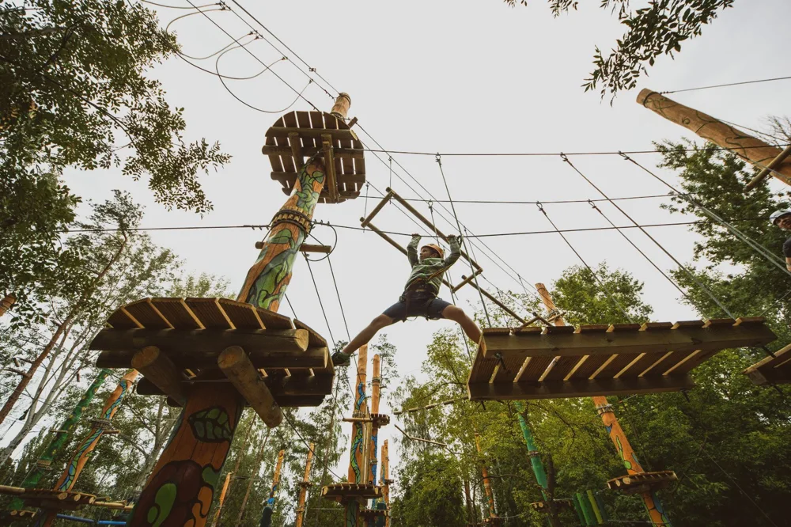

Egy jó osztálykiránduláson jut idő felfedezésre, közös játékra és egyszerűen együtt lenni. Összegyűjtöttünk 10 programötletet Siófokon és a környéken, hogy könnyebben összeálljon a terv. Válasszatok egy fő élményt, mellé egy lazább sétát, és máris megvan a nap ritmusa. 😊
🍂 Ősszel is tervezzetek bátran! A hajózás és több szabadtéri hely szezonális, a kalandpark csoportfogadása pedig jelenleg hétvégékre korlátozott. Az alábbi tudnivalók a 2026. október 2-án elérhető hivatalos tájékoztatók alapján készültek; a kirándulás napjára kérjetek visszaigazolást.
Siófok, amit együtt fedeztek fel
Kezdjétek a belvárosban: kilátás, egy jó séta és az első közös csoportkép. Ezekből könnyen összeáll egy érkezés utáni délután.

Víztorony és kiállítások
Nézzétek meg felülről a várost, aztán fedezzétek fel Varga Imre alkotásait és Siófok történetét! A panoráma jó indítás egy balatoni kiránduláshoz, a kiállítások pedig tartalmat adnak a látogatásnak.
Jó tudni: A lift a középső kiállítószintre érkezik; a kilátóhoz és a felső tárlathoz lépcsők is vezetnek. A csoportos belépést előre egyeztessétek.
Víztorony: jegyek és nyitvatartás →Rózsakert és parti séta
A kikötő melletti Rózsakertben jöhet egy ráérős séta, közös fotó és egy kis szusszanás a Balaton mellett. Jó választás két belépős program közé, vagy az első nap levezetésére.
Jó tudni: Saját játékötletünk: kis csapatokban keressetek három érdekes növényt és egy köztéri alkotást, majd mutassátok meg egymásnak, mit találtatok!
Rózsakert: helyszín és látnivalók →Irány a Balaton!
A tó akkor is élmény, ha nem strandolós az idő. Egy hajóút vagy egy vizes felfedezőprogram új nézőpontból mutatja meg a Balatont.
BAHART sétahajózás
Szálljatok hajóra, és nézzétek meg a partot a vízről! Az egyórás sétahajózás után ugyanabba a kikötőbe érkeztek vissza, így egyszerűen beilleszthető a városi programok mellé.
Jó tudni: Őszi lehetőség: a BAHART jelenlegi tájékoztatója szerint 2026. október 25-ig naponta indulnak sétahajók Siófokról. Az adott dátum indulását és a csoport feltételeit a szolgáltatónál ellenőrizzétek.
BAHART: aktuális hajózási lehetőségek →Vizek Háza élménypark
Hogyan jut el hozzánk az ivóvíz, és miért fontos vigyázni rá? A víz útját bemutató sétány és a vizes játszótér élménnyé teszi a környezeti nevelést. Jó téma egy természetismereti kiránduláshoz.
Jó tudni: Szezonra tervezzétek: a közzétett 2026-os nyitvatartás szeptember 30-ig tart. Októberi vagy későbbi látogatáshoz, illetve a következő szezonra kérjetek külön visszaigazolást: +36 30 321 8358.
Vizek Háza: szezon és időpont-egyeztetés →Egy kis természet, sok közös élmény
Ha a tanterem helyett most az erdő, a madarak és az állatok mesélnek, a tanulás is más ritmust kap.

Töreki természetvédelmi tanösvény
Tavak, rétek, erdők és madármegfigyelő torony: itt tényleg van mit felfedezni. A teljes tanösvény 8,5 km, de rövidebb sétát is választhattok, az osztály tempójához igazítva.
Jó tudni: Kényelmes túracipővel készüljetek, és előre válasszátok ki a bejárandó szakaszt. Saját feladatötletünk: gyűjtsetek megfigyeléseket a vizes élőhelyekről, majd készítsetek közös élménytérképet!
Töreki: útvonal és tudnivalók →Bella Állatpark
Állatparki séta és állatsimogató, ahol a közös felfedezésé a főszerep. A Bella külön ajánlatot kínál óvodáknak és iskoláknak; lovaglásról, tevegelésről vagy más kiegészítő élményről külön érdeklődhettek.
Jó tudni: Ősztől tavaszig hétfőn szünnap van a jelenlegi tájékoztató szerint. A csoportárat, a választott programokat és az esetleges transzfert előre egyeztessétek.
Bella: óvodai és iskolai programok →Kaland, amiben mindenki hozzátesz
Együtt megoldott feladvány vagy leküzdött akadály: ezekből lesznek azok a történetek, amelyeket még hazafelé is meséltek.

Zamárdi Kalandpark
Kötélpályák, csúszópályák és közös kihívások várnak a fák között. A park osztálykirándulásos ajánlatában csapatépítő pálya és tananyaghoz kapcsolható kincskeresés is szerepel.
Jó tudni: Fontos őszi változás: 2026. szeptember 1-től kizárólag hétvégén fogadnak csoportokat, előzetes bejelentkezéssel. A magassághoz illő pályákat és a választott programot egyeztessétek; az oktatás kötelező.
Kalandpark: osztálykirándulás egyeztetése →Esik? Legyen ez a B terv!
Ne az időjárás döntse el, milyen lesz a kirándulás. Válasszatok előre egy beltéri programot, és kérjetek hozzá csoportos időpontot.
Kálmán Imre Emlékház
Ismerjétek meg az operettszerző életét a szülőházában! Az állandó tárlat mellé időszaki kiállítások társulnak. Zenei vagy helytörténeti témához érdemes a múzeumpedagógussal is egyeztetni.
Jó tudni: A jelenlegi őszi–tavaszi rendben hétfőn és vasárnap zárva tart. Tárlatvezetésről vagy foglalkozásról előzetesen érdeklődjetek.
Emlékház: látogatás és kapcsolat →Siófoki Ásványmúzeum
A Kálmán Imre sétányon mintegy 3000 ásvány vár rátok. Egy földrajzi témájú kirándulásban különösen jó helye lehet ennek a színes, apró részletekkel teli gyűjteménynek.
Jó tudni: Kisebb kiállítótér: egy teljes osztály látogatásához előre kérjetek időpontot és egyeztessetek csoportbeosztást. Az aktuális nyitvatartást külön ellenőrizzétek.
Ásványmúzeum: a gyűjtemény bemutatása →Balatonföldvári Hajózástörténeti Látogatóközpont
Hajó alakú épület, interaktív hajózástörténeti kiállítás és mozi: tartalmas kirándulás a Balaton történetéhez. Jó időben a kilátóval is kiegészíthetitek; a látogatóközpont akadálymentesített.
Jó tudni: A siófoki szállás mellé külön szervezzétek meg az oda-vissza utat. II. fokú viharjelzésnél a kilátótorony nem látogatható, a kiállítótermek viszont a szolgáltató tájékoztatója szerint igénybe vehetők.
Látogatóközpont: aktuális látogatási információk →🗓️ Két nap, jó ritmusban
Nem kell minden élményt egy napba sűríteni. Ez a saját mintatervünk kiindulópont: alakítsátok az osztály korához, a választott dátumhoz és a költségkerethez!
1. nap · Megérkezünk Siófokra
- Érkezés után: csomagok és szállás egyeztetett rendben, majd ebéd.
- Délután: Víztorony, Rózsakert és egy közös parti séta.
- Ha indul hajó: sétahajózás; esős időre előre foglalt Emlékház-látogatás.
- Este: vacsora, aztán saját csapatjáték vagy közös kvíz. 🎲
2. nap · Jöhet a közös kaland
- Délelőtt: Bella Állatpark vagy az osztályhoz igazított töreki túra.
- Hétvégi alternatíva: előre egyeztetett Zamárdi Kalandpark.
- Esős alternatíva: Ásványmúzeum vagy külön utazással Balatonföldvár.
- Ebéd után: még egy csoportkép, és indulhat a hazautazás. 📸
Ez tervezési ötlet, nem foglalható programcsomag. A szállást, étkezést, közlekedést és a külső programokat külön kell egyeztetni; a felsorolt élmények nem részei automatikusan a szállás árának.
✅ Ettől lesz könnyebb a szervezés
- Először a dátum és a létszám. A hétköznapi és hétvégi lehetőségek eltérhetnek; a külső programoknál kérjetek csoportos visszaigazolást.
- Napi egy nagy élmény is elég. Hagyjatok időt utazásra, ebédre, mosdószünetre és kötetlen együttlétre.
- Étkezés előre egyeztetve. Küldjétek el a diákok és kísérők létszámát, valamint az allergiákat és az egyéb étrendi igényeket.
- Legyen esőnapi időpont is. A múzeumok csoportkapacitását ugyanúgy érdemes előre tisztázni.
🏡 A szállás legyen a biztos kiindulópont. Írjátok meg nekünk, mikor érkeznétek és hányan vagytok, és kérjetek a csoportotokra szóló szállásajánlatot!
Forrásaink a programok mellett található hivatalos oldalak. A saját játékötleteket és a mintatervet külön jelöltük. A nyitvatartás, az árak és a csoportfogadási feltételek változhatnak; az aktuális részleteket mindig a program szolgáltatójával egyeztessétek. Az aktuális cikk PDF-ben is letölthető.